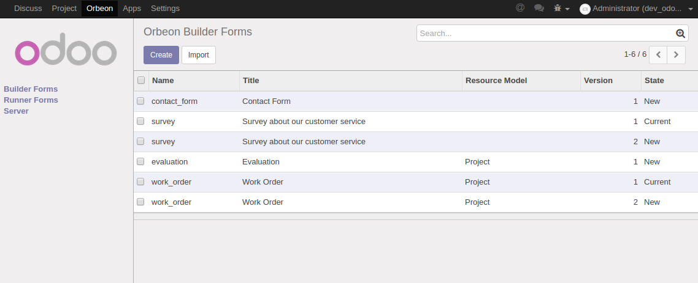
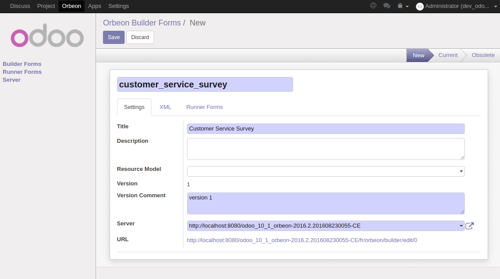
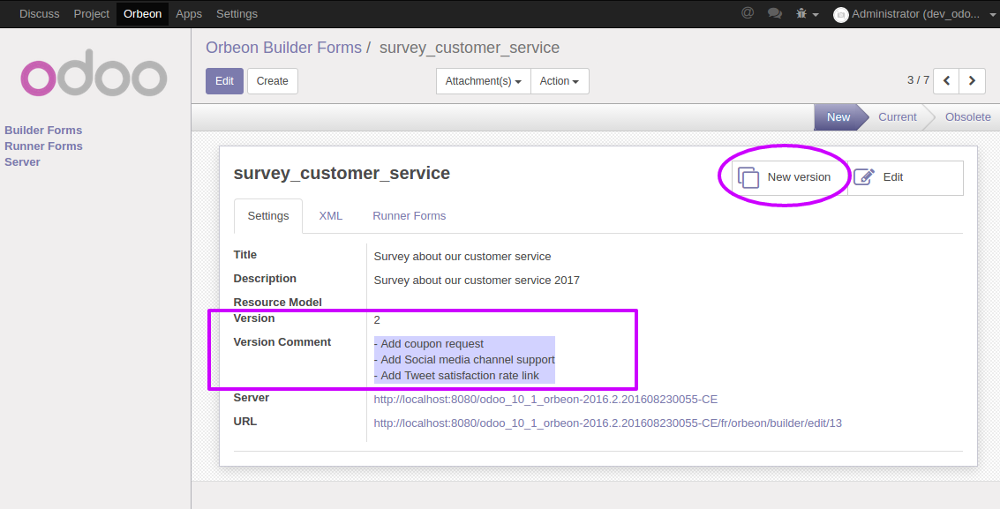

Manage Form Builder designs
Stored and managed in Odoo
Basic actions
List
List Form Builder design records.
Create and Update
Create and update Form Builder design records.
Delete

Delete Form Builder designs.
Which also checks whether no filled-in (Runner) Forms exist yet.
Advanced actions
Copy to new version

Copy as a new (unpublished) version.
This eases and kickstarts the development of a new version of a Form Builder design.
While a deployed/published version can still be live.